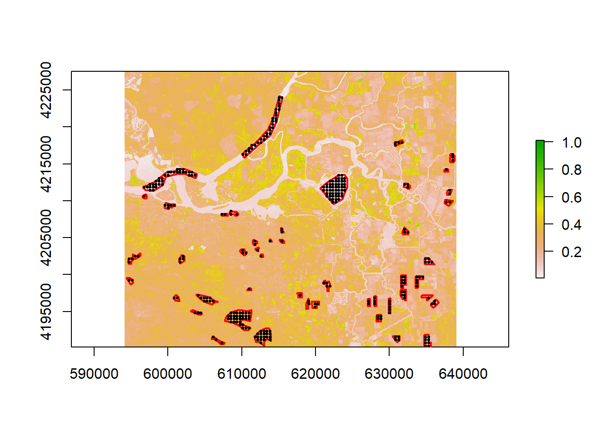

Chapter 2 Exploration des données
2.1 Télécharger les données
# dir.create('data', showWarnings = FALSE)
#
# if (!file.exists('data/rs/samples.rds')) {
# download.file('https://biogeo.ucdavis.edu/data/rspatial/rsdata.zip', dest = 'data/rsdata.zip')
# unzip('data/rsdata.zip', exdir='data')
# }2.2 visualiser les données
library(raster)## Loading required package: sp# Blue
b2 <- raster('data/rs/LC08_044034_20170614_B2.tif')
# Green
b3 <- raster('data/rs/LC08_044034_20170614_B3.tif')
# Red
b4 <- raster('data/rs/LC08_044034_20170614_B4.tif')
# Near Infrared (NIR)
b5 <- raster('data/rs/LC08_044034_20170614_B5.tif')
# Single band and composite maps
# You can plot individual layers of a RasterStack of a multi-spectral image.
par(mfrow = c(2,2))
plot(b2, main = "Blue", col = gray(0:100 / 100))
plot(b3, main = "Green", col = gray(0:100 / 100))
plot(b4, main = "Red", col = gray(0:100 / 100))
plot(b5, main = "NIR", col = gray(0:100 / 100))
To make a true (natural) color image that looks like a normal photograph (vegetation in green, water in blue…). The true-color reveals much about landscape than gray images.
landsatRGB <- stack(b4, b3, b2)
plotRGB(landsatRGB, axes = TRUE, stretch = "lin", main = "Landsat True Color Composite")
Anoher popular image visualization method in remote sensing is known as “False color” image. This representation makes it easy to see the vegetaion (in red).
par(mfrow = c(1,2))
plotRGB(landsatRGB, axes = TRUE, stretch = "lin", main = "Landsat True Color Composite")
landsatFCC = stack(b5,b4,b3)
plotRGB(landsatFCC, axes = TRUE, stretch = "lin", main = "Landsat False Color Composite")
2.3 Subset and rename bands
2.3.1 load all the layers
We can create a RasterStack withh the 11 layers. These layers represent reflection intensity in the following wavelengths: Ultra Blue, Blue, Green, Red, Near Infrared (NIR), Shortwave Infrared (SWIR) 1, Shortwave Infrared (SWIR) 2, Panachromatic, Cirrus, Thermal Infrared (TIRS) 1, Thermal Infrared (TIRS) 2.
filenames <- paste0('data/rs/LC08_044034_20170614_B', 1:11, ".tif")
filenames## [1] "data/rs/LC08_044034_20170614_B1.tif"
## [2] "data/rs/LC08_044034_20170614_B2.tif"
## [3] "data/rs/LC08_044034_20170614_B3.tif"
## [4] "data/rs/LC08_044034_20170614_B4.tif"
## [5] "data/rs/LC08_044034_20170614_B5.tif"
## [6] "data/rs/LC08_044034_20170614_B6.tif"
## [7] "data/rs/LC08_044034_20170614_B7.tif"
## [8] "data/rs/LC08_044034_20170614_B8.tif"
## [9] "data/rs/LC08_044034_20170614_B9.tif"
## [10] "data/rs/LC08_044034_20170614_B10.tif"
## [11] "data/rs/LC08_044034_20170614_B11.tif"landsat <- stack(filenames)
landsat## class : RasterStack
## dimensions : 1245, 1497, 1863765, 11 (nrow, ncol, ncell, nlayers)
## resolution : 30, 30 (x, y)
## extent : 594090, 639000, 4190190, 4227540 (xmin, xmax, ymin, ymax)
## crs : +proj=utm +zone=10 +datum=WGS84 +units=m +no_defs +ellps=WGS84 +towgs84=0,0,0
## names : LC08_044034_20170614_B1, LC08_044034_20170614_B2, LC08_044034_20170614_B3, LC08_044034_20170614_B4, LC08_044034_20170614_B5, LC08_044034_20170614_B6, LC08_044034_20170614_B7, LC08_044034_20170614_B8, LC08_044034_20170614_B9, LC08_044034_20170614_B10, LC08_044034_20170614_B11
## min values : 9.641791e-02, 7.483990e-02, 4.259216e-02, 2.084067e-02, 8.457669e-04, -7.872183e-03, -5.052945e-03, 3.931751e-02, -4.337332e-04, 2.897978e+02, 2.885000e+02
## max values : 0.73462820, 0.71775615, 0.69246972, 0.78617686, 1.01243150, 1.04320455, 1.11793602, 0.82673049, 0.03547901, 322.43139648, 317.99530029We can select specific layers (bands)
# select first 7 bands only
nlayers(landsat)## [1] 11landsat <- subset(landsat, 1:7)
nlayers(landsat)## [1] 7For clarity, we can set the names of the bands
names(landsat)## [1] "LC08_044034_20170614_B1" "LC08_044034_20170614_B2"
## [3] "LC08_044034_20170614_B3" "LC08_044034_20170614_B4"
## [5] "LC08_044034_20170614_B5" "LC08_044034_20170614_B6"
## [7] "LC08_044034_20170614_B7"names(landsat) <- c('ultra-blue', 'blue', 'green', 'red', 'NIR', 'SWIR1', 'SWIR2')
names(landsat)## [1] "ultra.blue" "blue" "green" "red" "NIR"
## [6] "SWIR1" "SWIR2"2.3.2 Spatial subset
We can use spatial subsetting in order to limit the analysis to a geographical region. We can specify the extent coordinates similar to the example above and we can use interactive selection from the image with “drawExtent” and “drawPoly” functions.
# Using extent
extent(landsat)## class : Extent
## xmin : 594090
## xmax : 639000
## ymin : 4190190
## ymax : 4227540e <- extent(610000, 4200000, 630000,4220000)
# crop landsat by the extent
landsatcrop <- crop(landsat, e)
# plot
par(mfrow = c(1,2))
plot(landsat[[5]])
rect(e[1],e[2],e[3],e[4], border='red', lwd=2)
plot(landsatcrop[[5]])The subbset image can be saved with “writeRaster” function
x <- writeRaster(landsatcrop, filename="cropped-landsat.tif", overwrite=TRUE)2.4 Spectral profiles
The spectral profile is a plot of the spectrum for pixels representing a certain earth surface features. It demonstrates the difference in spectral properties of various earth surface features.
To do that, we need to join information about the lad use and land cover with pixel values of the raster data.
# load the polygons with land use land cover information
samp <- readRDS('data/rs/samples.rds')
# generate 300 point samples from the polygons
ptsamp <- spsample(samp, 300, type='regular')
# add the land cover class to the points
ptsamp$class <- over(ptsamp, samp)$class
# extract values with points
df <- extract(landsat, ptsamp)
# To see some of the reflectance values
head(df)## ultra.blue blue green red NIR SWIR1 SWIR2
## [1,] 0.1301403 0.1214441 0.12337416 0.16097845 0.2799286 0.3164052 0.1993201
## [2,] 0.1506774 0.1494196 0.16594464 0.21658248 0.3449011 0.4283072 0.2883429
## [3,] 0.1335451 0.1155020 0.09880342 0.09637454 0.1655326 0.2052622 0.1695229
## [4,] 0.1358222 0.1189935 0.10266361 0.10246843 0.1691759 0.2135898 0.1761806
## [5,] 0.1382727 0.1360824 0.15022197 0.20292002 0.3283544 0.3536625 0.2204643
## [6,] 0.1373619 0.1325475 0.14807501 0.19598037 0.3412795 0.3763899 0.2387460# plot
plot(landsat[[5]])
plot(samp, add = TRUE, border = 'red', lwd = 2)
plot(ptsamp, pch = 21, bg = "black", col="black", cex = 0.45, add = TRUE)
Now, we can compute he mean reflectance values for each class and each band
ms <- aggregate(df, list(ptsamp$class), mean)
# instead of the first column, we use row names
rownames(ms) <- ms[,1]
ms <- ms[,-1]
ms## ultra.blue blue green red NIR SWIR1
## built 0.1793952 0.17174872 0.17306470 0.18926841 0.24509424 0.24496313
## cropland 0.1114418 0.08910717 0.08381689 0.05307937 0.46536090 0.15023884
## fallow 0.1327083 0.11714962 0.10428057 0.11370571 0.17786161 0.23519632
## open 0.1391741 0.13827491 0.15454435 0.21021588 0.35222304 0.36074174
## water 0.1339891 0.11708907 0.09978979 0.07925779 0.04942773 0.03400072
## SWIR2
## built 0.20053452
## cropland 0.06494667
## fallow 0.19925502
## open 0.21367460
## water 0.02758153Now we plot the mean spectra of these features.
# Create a vector of color for the land cover classes for use in plotting
mycolor <- c('darkred', 'yellow', 'burlywood', 'cyan', 'blue')
#transform ms from a data.frame to a matrix
ms <- as.matrix(ms)
# First create an empty plot
plot(0, ylim=c(0,0.6), xlim = c(1,7), type='n', xlab="Bands", ylab = "Reflectance")
# add the different classes
for (i in 1:nrow(ms)){
lines(ms[i,], type = "l", lwd = 3, lty = 1, col = mycolor[i])
}
# Title
title(main="Spectral Profile from Landsat", font.main = 2)
# Legend
legend("topleft", rownames(ms),
cex=0.8, col=mycolor, lty = 1, lwd =3, bty = "n")The spectral profile shows differences in the reflectance of different eatures of the earth’s surface. Water shows relatively low reflection in all wavelengths and built surfaces have relatively high reflectance in the longer wavelength.